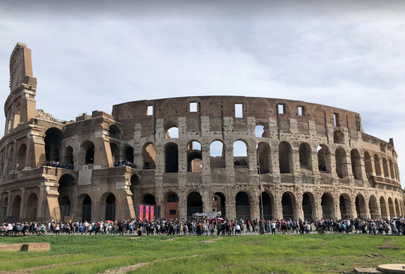

콜로세움
바로크 양식의 아름다움이
절정에 달한 시기를
보여주며 로마의 가장 멋진 분수로 손꼽히는 트레비 분수
화려함과 아름다움을 느낄 수 있는
거대한 외관을 자랑하는 고딕양식의 대성당. 밀라노 대성당
기원전 27년 아그리빠가 올림포스의 신들에게
제사를 지내기 위해 처음 세운 로마판테온

도시의 기원이 시작된 거대한 고대문명의 도시 로마
이탈리아의 경제 수도 밀라노
120여 개의 섬으로 구성된 바다 위의 도시 베네치아